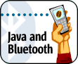

|
Search |
||
Getting Started with Java and Bluetooth
Tue, 2004-07-27

You're a Java developer, and you've finally got yourself a Bluetooth device. Maybe it's a cell phone, a PDA, or a USB dongle for your PC. Or perhaps you've heard a lot about Bluetooth, but you aren't sure what exactly you can do with it. In either case, you've had some exposure to Bluetooth, and now you're ready to start flexing your programming muscles with the technology. Great! The purpose of this article is to give you a good introduction to the Bluetooth protocol, including an overview of its protocol layers and profiles. We'll also cover the the classes and methods of JSR-82, the official Java Bluetooth API. Finally, we'll wrap things up by describing what software that you'll need in order to get started. What is Bluetooth?What exactly is Bluetooth? Well, simply stated, Bluetooth is a wireless communication protocol. Since it's a communication protocol, you can use Bluetooth to communicate to other Bluetooth-enabled devices. In this sense, Bluetooth is like any other communication protocol that you use every day, such as HTTP, FTP, SMTP, or IMAP. Bluetooth has a client-server architecture; the one that initiates the connection is the client, and the one who receives the connection is the server. Bluetooth is a great protocol for wireless communication because it's capable of transmitting data at nearly 1MB/s, while consuming 1/100th of the power of Wi-Fi. In order for Bluetooth devices to communicate properly, they all need to conform to the Bluetooth specification. The Bluetooth specification, like any other spec, defines the standard that a Bluetooth device should adhere to, as well as rules that need to be enforced when communicating. You can download the specification documents at the official Bluetooth web site. The Bluetooth protocol stack and profiles together comprise the Bluetooth specification. The Bluetooth Protocol StackThe Bluetooth stack is the software or firmware component that has direct access to the Bluetooth device. It has control over things such as device settings, communication parameters, and power levels for the Bluetooth device. The stack itself consists of layers, and each layer of the stack has a specific task in the overall functionality of the Bluetooth device. Since Bluetooth device manufacturers are not required to use all of the layers in the stack, we're only going to cover the main ones that are implemented in almost every Bluetooth device.
Bluetooth ProfilesBluetooth Profiles were created to allow different Bluetooth devices to interoperate. For instance, let's say that you own a Bluetooth-enabled PDA and a Bluetooth-enabled wireless phone. Both devices have Bluetooth stacks. How can you tell if those two devices will allow you to synchronize the phone lists between each other? How will you know if you can send a phone number from the PDA to the phone? And most importantly, how can you determine if these devices will allow you to browse the Internet from the PDA, using the phone as a wireless modem? A Bluetooth profile is a designed set of functionality for Bluetooth devices. For instance, using the examples listed above, the phone and the PDA must both support the Synchronization Profile in order to synchronize data between them. In order to send object data such as a .vcf file from the PDA to the phone, then both devices need to have the Object Push Profile implemented. Finally, the PDA and the wireless phone must both support the Dialup Networking Profile in order for the PDA to wirelessly browse the Internet via the phone. If you want your Bluetooth-enabled devices to interact, having a Bluetooth stack is not good enough -- they also need to conform to a particular profile. A word of caution here: do not get Bluetooth profiles confused with J2ME profiles. J2ME profiles are a set of Java classes that extend the functionality of a J2ME Configuration. For instance, the MID Profile is a set of Java classes that extend the functionality of the Connected Limited Device Configuration. On the other hand, a Bluetooth profile can be implemented in any language and on any platform, because it refers to a defined set of functionality for a Bluetooth-enabled device. So the Object Push Profile can be implemented on a Palm OS PDA in C++, and can be implemented on a Bluetooth-enabled printer in assembly language. For those of you who are familiar with RUP methodology, Bluetooth Profiles are also called Bluetooth Use Cases. Java Bluetooth Application ConceptsThe basic concepts of any Bluetooth application (Java or otherwise) consist of the following components:
The Java Bluetooth Specification adds a special component to the mix called the Bluetooth Control Center (BCC), which is outside of the scope of this article. Stack InitializationBefore you can do anything, you need to initialize your stack. Remember, the stack is the piece of software (or firmware) that controls your Bluetooth device. Stack initialization can consist of a number of things, but its main purpose is to get the Bluetooth device ready to start wireless communication. Every vendor handles stack initialization differently, so we'll cover how to initialize the stack using the Atinav Java Bluetooth SDK. Device Management
In a nutshell, that's about all it takes to perform Device Management with the Java Bluetooth Specification APIs. Now, let's take a look at the concept in Bluetooth that allows you to discover other Bluetooth devices: device discovery. Device DiscoveryYour Bluetooth device has no idea of what other Bluetooth devices are in the area. Perhaps there are laptops, desktops, printers, mobile phones, or PDAs in the area. Who knows? The possibilities are endless. In order to find out, your Bluetooth device will use the Device Discovery classes that are provided into the Java Bluetooth API in order to see what's out there. Let's take a look at the two classes needed in order for your
Bluetooth
device to discover remote Bluetooth devices in the area: After getting a The are multiple ways to discover remote Bluetooth devices, but to be
brief,
I'll just show you one particular way. First, your object must
implement the
When a Bluetooth device is found, the JVM will call the Service DiscoveryNow that you know how to find other Bluetooth devices, it would be
really nice
to see what services that those devices offer. Of course, if the That's where Service Discovery comes in. You can never be sure what
services
a
Service Discovery is just like Device Discovery in the sense that you
use the
Service RegistrationBefore a Bluetooth client device can use the Service Discovery on a Bluetooth server device, the Bluetooth server needs to register its services internally in the Service Discovery database (SDDB). That process is called Service Registration. This section will discuss what's involved for Service Registration for a Bluetooth device, and I'll also give you a rundown of the classes needed to accomplish this. Note: In a peer-to-peer application, such as a file transfer or chat application, be sure to remember that any device can act as the client or the server, so you'll need to incorporate that functionality (both client and server) into your code in order to handle both scenarios of Service Discovery (i.e., the client) and Service Registration (i.e., the server). Here's a scenario of what's involved to get your service registered and stored in the SDDB.
And that's all that you need to do Service Registration in Bluetooth. The next step is Communication. CommunicationBluetooth is a communication protocol, so how do you communicate with it? Well, the Java Bluetooth API gives you three ways to send and receive data, but for right now, we'll cover only one of them: RFCOMM. Note: RFCOMM is the protocol layer that the Serial Port Profile uses in order to communicate, but these two items are almost always used synonymously. Server Connections with the Serial Port ProfileThe code listing below demonstrates what is needed to open a connection on a Bluetooth device that will act as a server. For the most part, this looks like just about the same code used in
Service Registration,
and in fact, it is! Service Registration and Server Communication are
both accomplished
using the same lines of code. Here's a few items that I want to point
out. The
String The implementation has also assigned a channel identifier to this service. The client must provide the channel number along with other parameters in order to connect to a server. Client Connections with the Serial Port ProfileEstablishing a connection with the Serial Port Profile for a J2ME
client is
simple because the paradigm hasn't changed for J2ME I/O. You simply call
You obtain the What does a SPP client connection URL look like? If the address of the server is 0001234567AB, the String that the SPP client would look something like this: The Java Bluetooth Development KitsThe most widely available development kit for Java Bluetooth applications is the J2ME Wireless Toolkit 2.2 from Sun. It incorporates a Bluetooth network simulator, and has support for OBEX. And best of all, it's free! The current version of the J2ME Wireless Toolkit is available on Windows platforms. If you're targeting JSR-82-enabled Nokia phones, such as the 6600, then you may also want to try out the Nokia Developer's Suite 2.1. Much like Sun's Wireless Toolkit, the Nokia Developer's Suite is free and it also includes a Bluetooth network simulator. The Nokia Developer's Suite supports Windows and Linux platforms. SonyEricsson also makes a free development kit for its P900 Java Bluetooth-enabled phone, which can be found at their developer site. Atinav makes one of the most comprehensive JSR-82 implementations and developer kits with support for J2ME CLDC, J2ME CDC, and J2SE devices. They support numerous RS-232, UART, USB, CF, and PCMCIA Bluetooth devices. Their solution is based on an all-Java stack, and their SDK includes the following profiles: GAP, SDAP, SPP, OBEX, FTP, Sync, OPP, Fax, and Printing -- whew! They make the only JSR-82 implementation for the PocketPC platform, and also support Windows and Linux. Possio makes a JSR-82 development kit that complements their Java Bluetooth-enabled access point, the PX30. The PX30 is a Linux-based access point, and is powered by an Intel XScale processor. It includes Wi-Fi, Bluetooth, and the CDC Foundation Profile. Rococo is famous for making the first Java Bluetooth Simulator, although they also make a Java Bluetooth developer kit for the Palm OS 4 platform. The simulator is currently priced at $1000, and supports the following profiles: GAP, SDAP, SPP, and GOEP. Avetana is a German company that makes the only JSR-82 implementation for the Mac OS X platform. They also provide JSR-82 implementations for Windows and Linux. SummaryWhat have we learned here? Hopefully, you should have a good understanding of what Bluetooth is and how to use it. Before you start communicating to other Bluetooth devices, you need to discover the devices in your vicinity, and search for their services. After all of the preliminaries are out of the way, you can stream data back and forth to any Bluetooth-enabled device in your area, whether it's running Java or not. With over one million Bluetooth-enabled devices shipping per week (that's right, one million devices per week), there's a lot of PDAs, cell phones, laptops, desktops, access points, cameras, keyboards, mice, printers, audio players, and vehicles out there for your mobile Java apps to play with! »
Related Topics >>
Mobility
Comments
Comments are listed in date ascending order
(oldest first)
|
||
|
|